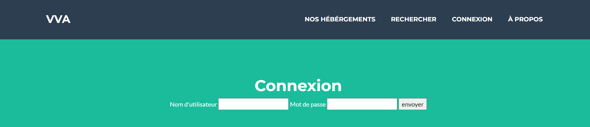
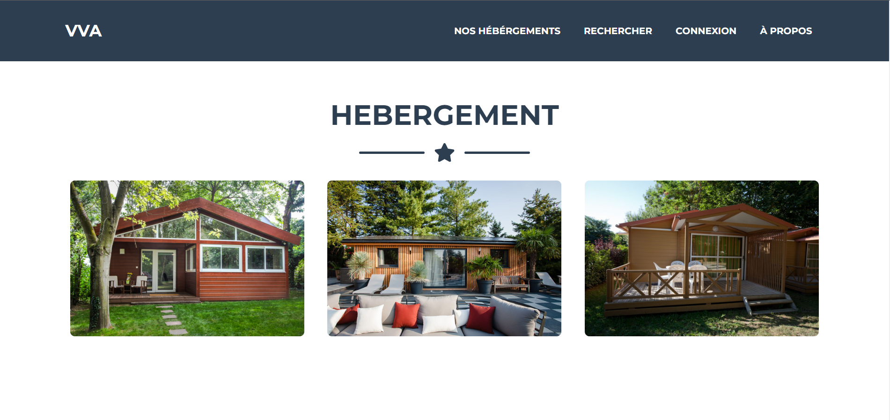
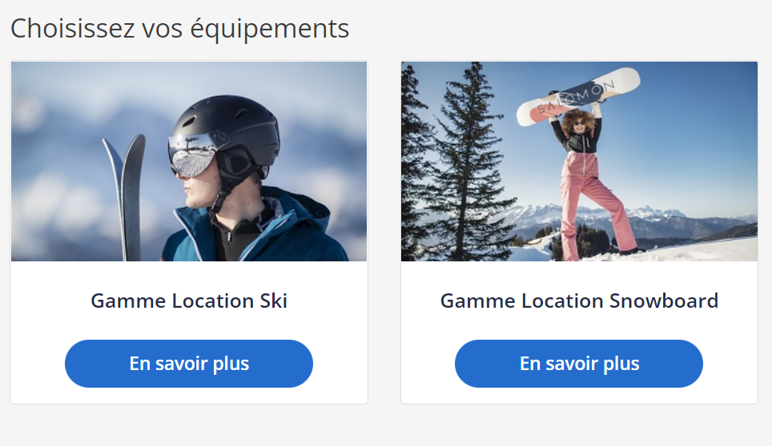
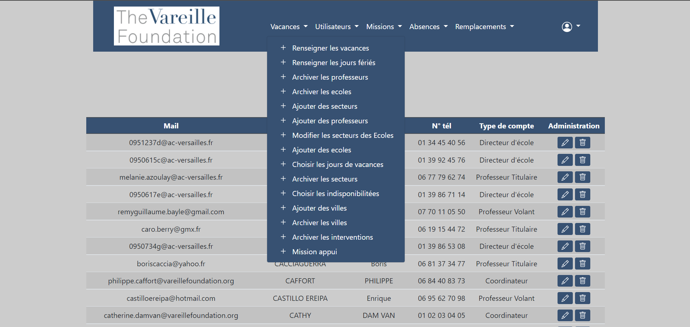
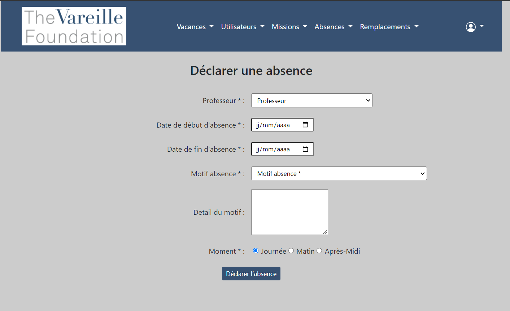
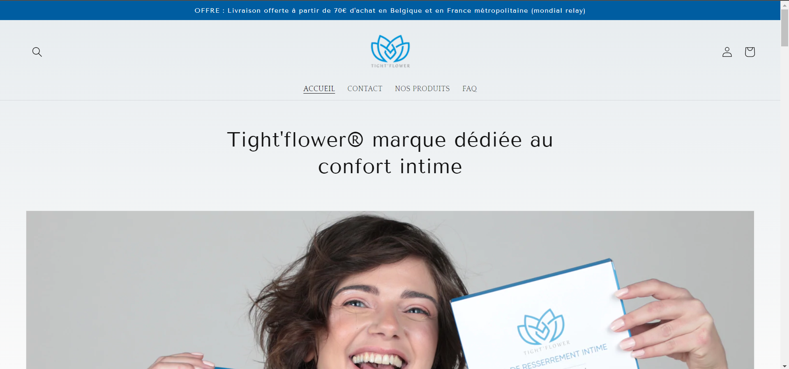
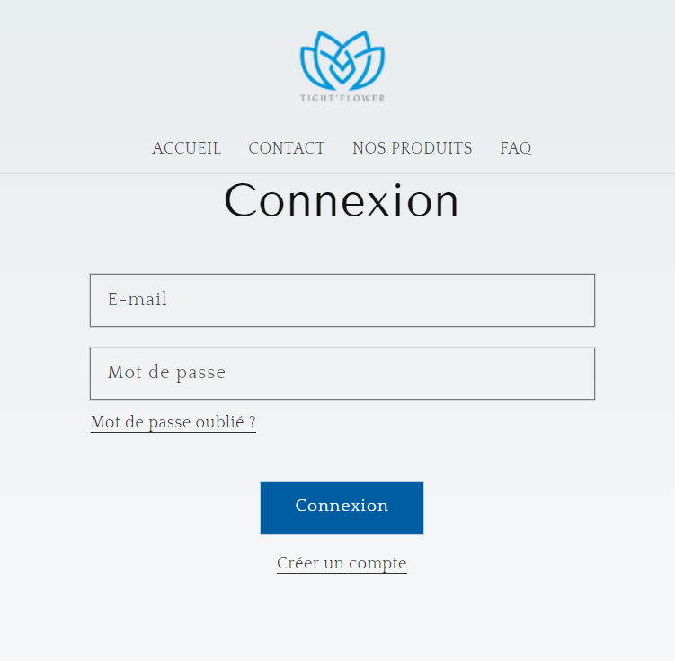

Traore Cantos kote
Vous y retrouverez l'ensemble de mes réalisations que j'ai pu effectuer durant mon bts sio option slam
Je m'apelle Koté Traore Cantos, je suis actuellement en BTS sio option SLAM au Lycée Parc de Vilgénis à Massy. Ce portfolio fut réalisé durant ma seconde année de BTS SIO (Services Informatiques aux Organisations) Option SLAM (Développement d'applications)..
Lien vers mon CV : Voir mon CV
Le BTS Services Informatiques aux Organisations est un diplôme recconu par l'état de niveau BAC+2. Il remplace depuis Septembre 2011, l'ancien BTS IG (Informatique de gestion). En effet, cette nouvelle formule réponds aux attentes de la profession en matière de qualification. Le programme a évolué en fonction de la place et du rôle des TIC (Technologies de l'Information et de la Communication) Et propose deux spécialités bien distinctes : Le BTS SIO Option SISR et le BTS SIO Option SLAM.
La spécialisation SISR du BTS SIO permet d’apprendre un métier qui consiste à installer, configurer et gérer les équipements et les réseaux informatiques. Cela signifie intervenir sur la conception, la mise en place, le déploiement et la maintenance de programmes destinés à la gestion au sein d’une organisation.
La spécialisation SLAM du BTS SIO est elle plus orientée Développement. Elle permet d'apprendre à réaliser des logiciels, sites webs, applications mobiles, mais aussi de rédiger des documentations techniques liées à celles-ci. De plus, elle permet d'apprendre à former des utilisateurs pour gérer la maintenance des applications.
Les Projets sont des travaux en realisé par soi-même. Ils permettent de mettre en situation les élèves selon des contextes qu'ils pourraient rencontrer dans le monde profesionnel.
Le Projet 1 (au premier semestre du BTS SIO en 2ème année) est général,spécialisé developpement web avec un cahier des charges que les profésseurs nous ont donnés au préalable.
Le Projet 2, est plus specialisé client lourd. Les élèves sont plus libre dans la choix des fonctionnalités de l'application.


VVA location consiste a permettre a l'utilisateur de regarder et louer des équipement de ski.


Une veille est une activité consistant à rester au courant des dernières avancées et informations sur un secteur donné.
Durant ce BTS SIO, Nous avons dû mettre en place une Veille :
- Une Veille Technologique, qui elle, sert à rester informé sur les différentes innovations et technologies disponibles sur un marché en rapport avec les TIC (Technologies de l'Information et de la Communication).
Pour effectuer cette veille technologique, j'ai utilisé l'outil Feedly, où j'ai ajouté différentes sources tel que :
01Net, Next-Impact, La Tribune Télécoms, Presse-Citron, ANSSI, Zataz ...
Les deux thèmes sur lesquels je fais ma veille technologique sont :
- L'évolution du Monde Web (Réseaux Mobiles, BYOD ...)
- La RGPD (Reglementation Générale de la Protection des Données)
Durant mon 1er stage j'ai effectuer le developement d'un site internet dans l'entreprise Vareille foundation je me suis occupé plus particulierement du backend , gestion de base de donées via des formulaires.


Durant mon 2ème stage j'ai effectuer le developement d'un site internet dans l'entreprise Tight'flower je me suis occupé plus particulierement du frontend , creation du site, graphisme du site, ce que l'utilisateur peut voir .

